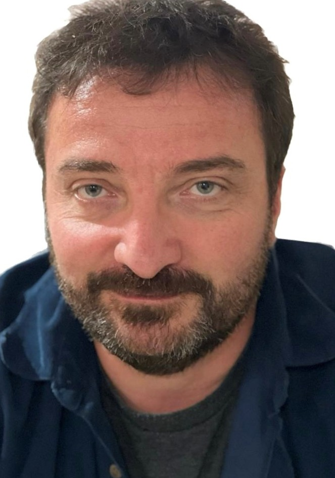

Company
NuMetrik Systems is a Canadian company on a mission to give natural resource operations the continuous, accurate process data they need to make real decisions, starting with mineral processing, where the measurement challenge is especially difficult.
Our Mission
Across mining, oil sands, cement, water treatment, and other natural resource industries, complex processes are often run with incomplete information. The variables that drive efficiency, environmental performance, and safety are frequently measured intermittently, inferred indirectly, or monitored by instruments that struggle in harsh process conditions.
NuMetrik exists to change that. We are building a platform centered on Characterization, Connectivity, and Certainty to deliver continuous, accurate, trusted process data from the sensor to the decision. The core physics apply broadly, and the implementation is disciplined and sequential.
Our first focus is mineral processing, starting with key circuits where slurry moves through long pipelines and measurement remains especially challenging and underserved. We are proving the platform here first, with the rigor required to extend it across natural resource operations.
The Platform
Three capabilities, each available independently or as an integrated platform. Built for natural resource industries. Deployed first in mineral processing.
Each available independently — or as an integrated platform
Continuous, non-intrusive measurement of the parameters that drive process decisions. Deployed externally, with nothing touching the process stream.
Active · Mineral Processing · Pilot Program OpenIndustrial network infrastructure purpose-built for demanding site environments, above-ground and underground. Bridges field instrumentation to operational systems.
Sensor fusion and process data reconciliation, turning multiple measurement streams into a single trusted operational picture for control and reporting.
What We Stand For
We hold ourselves to the same standards as the technology we commercialise, independently validated and transparent about what is proven versus what is on the roadmap. We do not claim capabilities we have not demonstrated.
We are explicit about what the platform delivers today and what remains in active development. Pilot partners know exactly what they are getting, what the validation targets are, and why each milestone matters. No surprises.
Giving process engineers continuous, accurate data to actually control their circuits, reducing waste, improving safety, and producing a defensible record for compliance and reporting. Those are the outcomes we are optimising for.
Leadership

Alex brings 25+ years leading the development and commercialization of complex sensor and analytical instrumentation systems, from life science precision to industrial, aerospace, and defense. His career includes roles at MDA Space Missions, Sciex, Smiths Detection, and Blutip Power Technologies.
NuMetrik was founded from a disciplined process of identifying where proven technology from one domain creates significant untapped value in another, recognizing that sensing and process intelligence technologies, already validated in adjacent mission-critical industries, could transform how operational decisions are made in natural resources processing.
Alex holds a B.Sc. in Mechanical Engineering from the Technion — Israel Institute of Technology, and is a licensed Professional Engineer in Ontario.
NuMetrik is just getting started. As the platform matures and the team grows, this page will reflect the people building it.